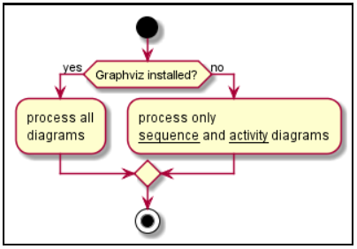

Classe Diagram
Class diagram is a static representation used in the
programming area to describe the structure of a
system, presenting its classes, attributes,
operations and relationships between objects.
@startuml
Class01 "1" *-- "many" Class02 : contains
Class03 o-- Class04 : aggregation
Class05 --> "1" Class06
@enduml

Activity Diagram
Activity Diagram is a behavioral diagram (which
specifies software behavior), and through it we can model parts of software behavior.
The activity diagram graphically illustrates how the
software will work (at the micro or macro level), how it
will perform some of its parts, how the system will act in
the business reality in which it is inserted
@startuml
start
if (Graphviz installed?) then (yes)
:process all\ndiagrams;
else (no)
:process only
__sequence__ and __activity__ diagrams;
endif
stop
@enduml

Sequence Diagram
Class diagram is a static representation used in the
programmin area to describe the structure of a system,
presenting its classes, attributes, operations and
relationships between objects.
@startuml
Alice -> Bob: Authentication Request
Bob --> Alice: Authentication Response
Alice -> Bob: Another authentication Request
Alice <-- Bob: Another authentication Response
@enduml

Archimate Diagram
ArchiMate Diagram offers a visual language
to model and capture enterprise architecture.
It provides a means to visualize relationships
within and between different domains.
These domains primarily include products/services,
processes, organization, data applications and technical infrastructure
@startuml
archimate #Technology "VPN Server" as vpnServerA <>
rectangle GO #lightgreen
rectangle STOP #red
rectangle WAIT #orange
@enduml